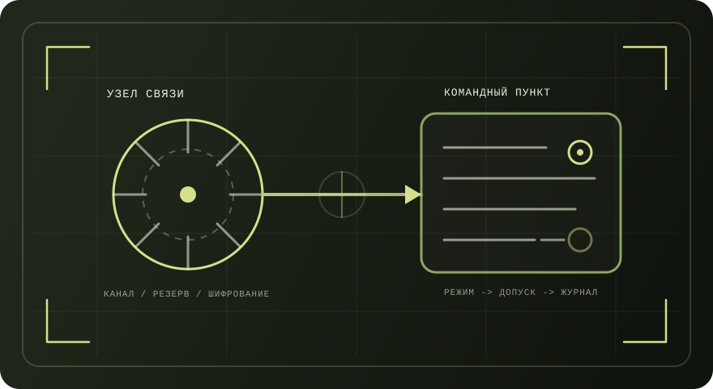

Военный специалист (подразделения связи/ИТ)
Тема страницы: статус военной службы, внутренняя служба и дисциплина, задачи войск связи, режим секретности (в рамках общедоступных норм) и типовые направления работ по эксплуатации связи и средств автоматизации.
Схема: «связь → управление → режимы»
Иллюстрация связывает задачи связи и режимные требования.

Содержание
Быстрый переход по разделам страницы.
- 1. Исполнение обязанностей военной службы
- 2. Нормативная база (уставы и законы)
- 3. Внутренняя служба и дисциплина
- 4. Войска связи: назначение и задачи
- 5. Государственная тайна: степени секретности и допуск (справка)
- 6. Типовые направления работ (связь/ИТ)
- 7. Документы учета и отчетность (обобщенно)
- 8. Ответственность (рамка)
1) Исполнение обязанностей военной службы
Положения приведены по общевоинским уставам.
В общевоинских уставах закрепляется перечень ситуаций, когда военнослужащий считается исполняющим обязанности военной службы, включая исполнение должностных обязанностей, выполнение приказа, несение боевого дежурства (боевой службы), несение службы в суточном наряде, участие в учениях, нахождение в служебной командировке, а также иные перечисленные случаи.
2) Нормативная база (уставы и законы)
Ссылки вынесены на страницу «Источники».
| Документ | Уровень | Что регулирует (в контексте этой темы) |
|---|---|---|
| Указ Президента РФ № 1495 | Указ Президента РФ | Утверждение общевоинских уставов; порядок внутренней службы и дисциплины; правила исполнения обязанностей военной службы. |
| Дисциплинарный устав ВС РФ | Общевоинский устав | Воинская дисциплина; обязанности по её соблюдению; поощрения и дисциплинарные взыскания; полномочия командиров. |
| Закон РФ № 5485‑1 «О государственной тайне» | Закон РФ | Понятие государственной тайны; степени секретности; общие принципы допуска и доступа; правовая рамка защиты сведений. |
| ФЗ № 53‑ФЗ «О воинской обязанности и военной службе» | Федеральный закон | Правовые основы прохождения военной службы (организационные положения, статусы, порядок прохождения). |
3) Внутренняя служба и дисциплина
Определения приведены по общевоинским уставам.
Устав внутренней службы закрепляет назначение внутренней службы как поддержание внутреннего порядка и воинской дисциплины, обеспечивающих боевую готовность, безопасность военной службы, учебу личного состава и организованное выполнение задач повседневной деятельности.
Дисциплинарный устав определяет требования к соблюдению воинской дисциплины, а также устанавливает систему поощрений и дисциплинарных взысканий и порядок их применения.
В общевоинских уставах описываются формы несения службы и распорядок, включая суточный наряд и боевое дежурство, а также порядок подчинения и исполнения приказов.
4) Войска связи: назначение и задачи
Открытая справочная информация по назначению войск связи и задачам эксплуатации связи/автоматизации.
В открытых учебных материалах войска связи описываются как специальные войска, предназначенные для развертывания системы связи и обеспечения управления войсками (силами) в мирное и военное время, а также для эксплуатации систем и средств автоматизации на пунктах управления.
В качестве примеров средств связи приводятся радиорелейные, тропосферные и космические станции, средства высокочастотной связи, коммутационное оборудование и аппаратура засекречивания сообщений.
В материалах подчеркивается ориентация на устойчивое, непрерывное, оперативное и скрытное управление, включая внедрение цифровых средств связи и защищенных режимов обмена информацией.
5) Государственная тайна: степени секретности и допуск (справка)
Раздел приведен в рамках общедоступных положений закона.
Закон РФ «О государственной тайне» определяет государственную тайну как защищаемые государством сведения, распространение которых может нанести ущерб безопасности Российской Федерации, и регулирует отношения в сфере отнесения сведений к государственной тайне и их защиты.
- «Особой важности»
- «Совершенно секретно»
- «Секретно»
В открытом тексте закона описываются формы допуска и общий принцип, по которому допуск более высокой степени является основанием для доступа к сведениям более низкой степени.
6) Типовые направления работ (связь/ИТ)
Перечень сформирован в привязке к открыто описанным задачам связи и эксплуатации средств автоматизации.
- Развертывание и поддержание работоспособности элементов системы связи (в рамках задач обеспечения управления).
- Эксплуатация систем и средств автоматизации на пунктах управления (в части обеспечения штатного функционирования).
- Восстановление работоспособности при нарушениях связи и функционирования средств (в рамках регламентов службы и задач подразделения).
В открытых перечнях оснащения упоминаются коммутационное оборудование и различные классы станций, что задает спектр эксплуатационных работ: настройка, контроль параметров и устранение неисправностей.
Отмечаются защищенные и помехоустойчивые режимы обмена и использование аппаратуры засекречивания сообщений, что усиливает требования к соблюдению режимов и регламентов эксплуатации.
7) Документы учета и отчетность (обобщенно)
Перечень отражает типовые категории документации, возникающие при эксплуатации связи/средств автоматизации и несении службы.
- Журналы учета средств связи и эксплуатации оборудования (по установленным формам части/подразделения).
- Документация по работоспособности и восстановлению (отметки о мероприятиях, отчетность по результатам).
- Документы по назначению ответственных лиц и распределению обязанностей (приказы/распоряжения).
- Документация по несению службы (дежурства/наряды) и передаче смены (по установленному порядку).
- Документы режимного характера при наличии допуска/доступа (в рамках закона и внутренних инструкций).
- Материальные ведомости учета имущества (при наличии соответствующего учета).
8) Ответственность (рамка)
Раздел фиксирует нормативные ориентиры ответственности по общевоинским уставам и закону о государственной тайне.
Дисциплинарный устав устанавливает виды поощрений и дисциплинарных взысканий, полномочия командиров (начальников) по их применению и общий порядок поддержания дисциплины.
Закон «О государственной тайне» задает правовую рамку защиты секретной информации, включая классификацию сведений по степеням секретности и общие принципы допуска/доступа.